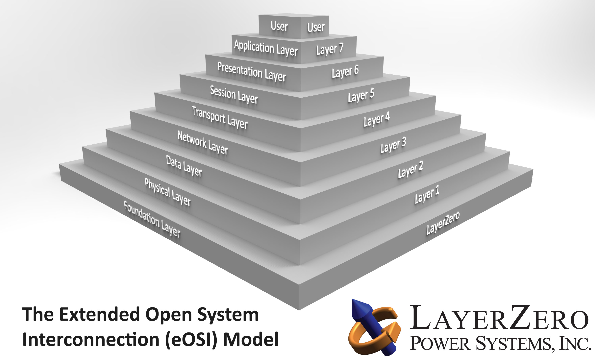
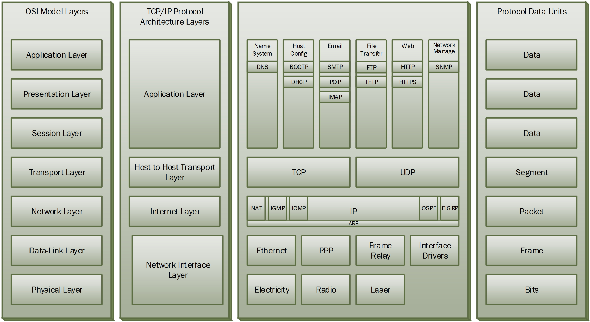
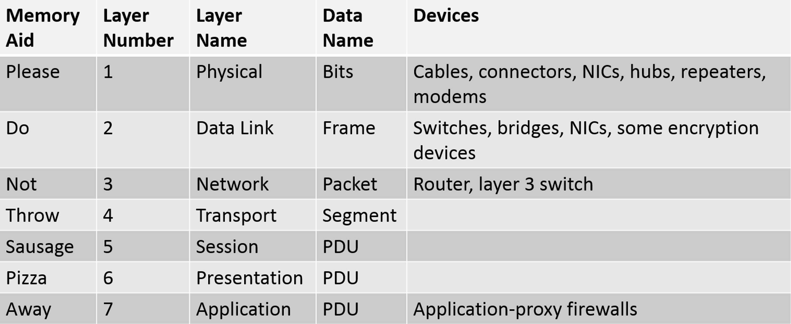
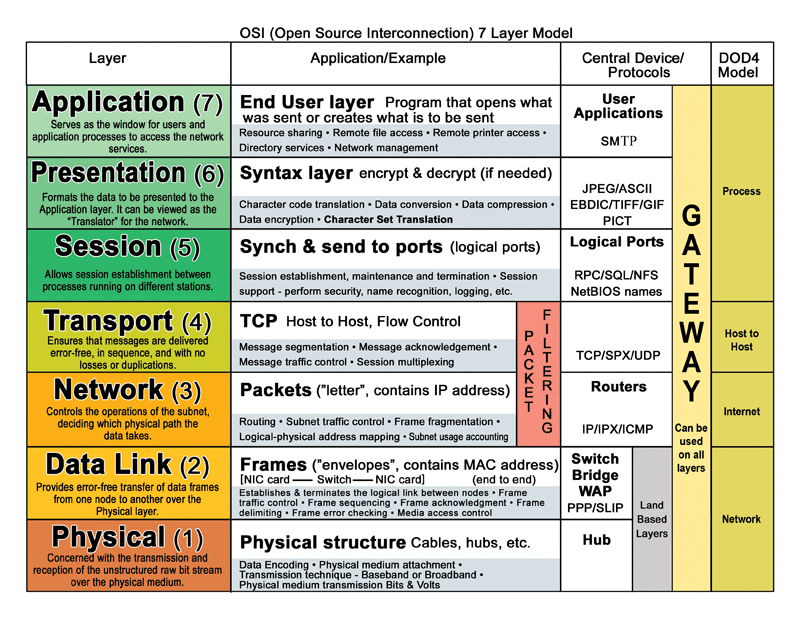
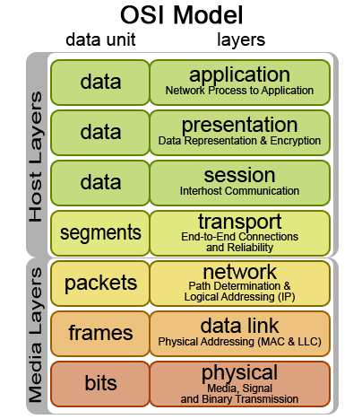
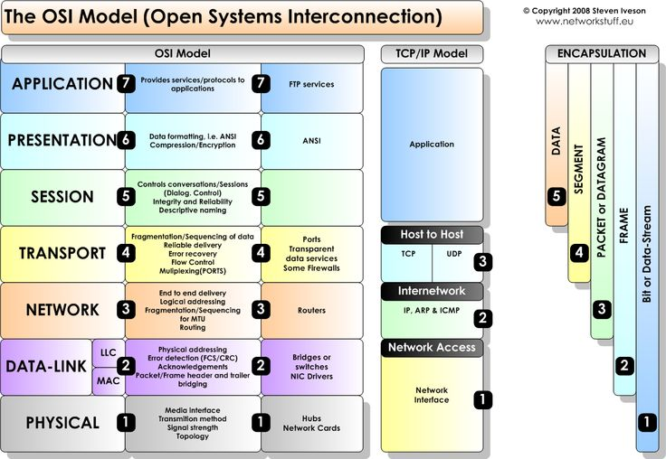
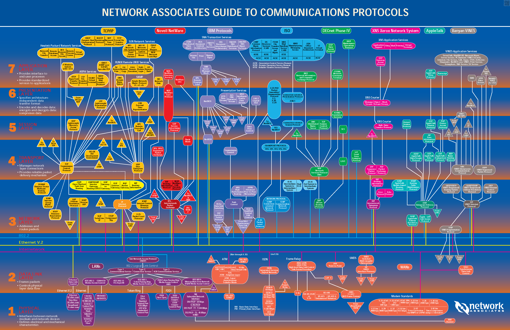

The OSI Model.
     
Download the image shown below. Notice the many models and protocols used once upon a time. Pay attention to the TCP/IP model (in yellow color). Look at the TCP/IP suite of protocols. Read carefully. At which layer is encryption and decoding done? At which layer do we find ICMP?
